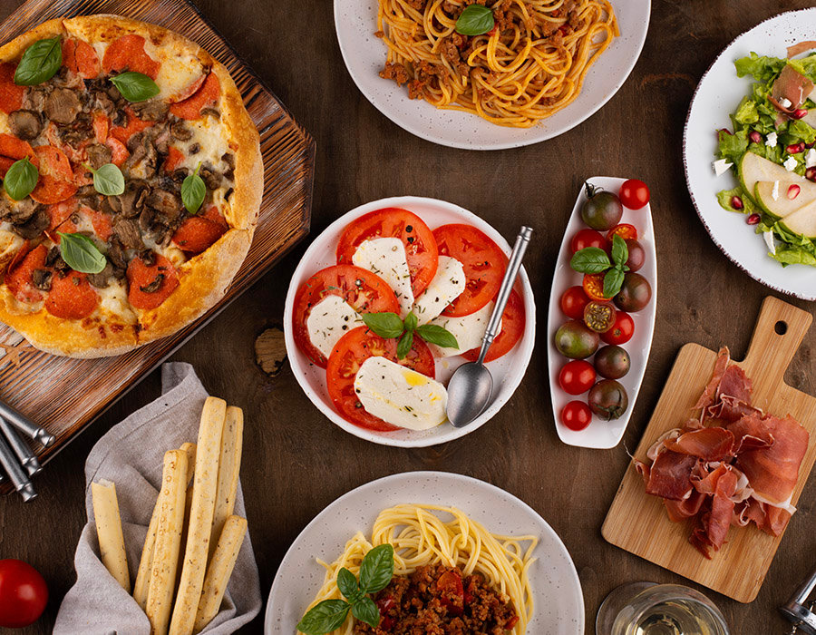

Popular Cuisines in London
British
Traditional pub fare and modern British gastronomy

Indian
Authentic curries and modern fusion dishes

Italian
Fresh pasta and wood-fired pizzas
Dining Tips
Reservations
Book in advance for popular restaurants, especially for weekend dining.
Service Charge
A 12.5% service charge is often added to bills in London restaurants.
Peak Hours
Lunch: 12-2pm, Dinner: 7-9pm. Book outside these times for quieter dining.